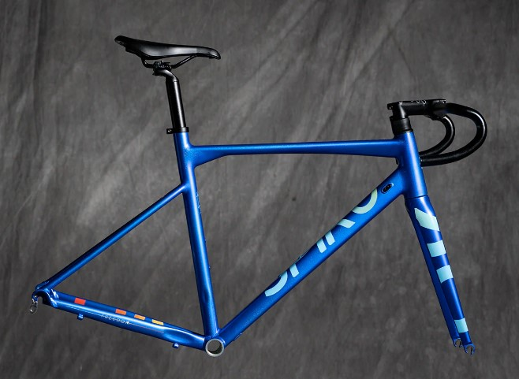

Arma tu Bici
Personaliza tu bicicleta eligiendo entre una variedad de componentes. Visualiza cómo se verá tu bici personalizada.

Personaliza tu bicicleta eligiendo entre una variedad de componentes. Visualiza cómo se verá tu bici personalizada.